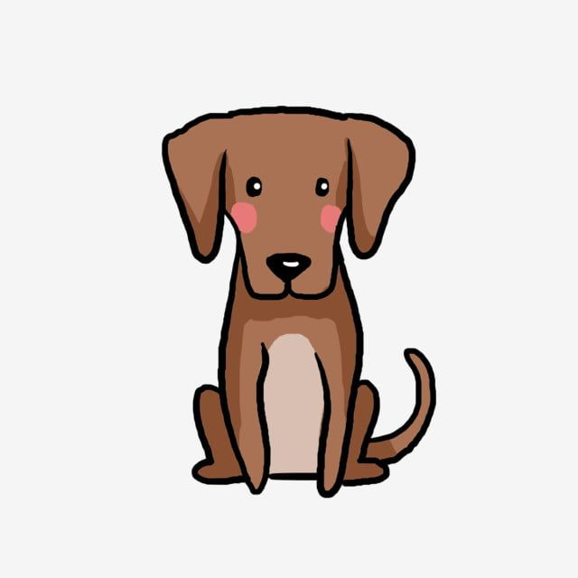

¿Quienes somos?
Somos una fundación radicada en Coyhaique, Región de Aysén, dedicada a proporcionar una vida digna a los animales domésticos y de granja. Dedicamos nuestro tiempo a rescatar, rehabilitar y dar en adopción a muchas victimas de abuso y maltrato. Si te interesa, adoptar o realizar un aporte, ház click en el botón "Ingresar" y conoce a nuestros amigos.
Forma parte de nuestro equipo
Si te interesa formar parte de nuestro equipo y ayudarnos a salvar más vidas, llena el formulario "Voluntariado" que tienes a tu derecha, para así conocerte mejor y ponernos en contacto contigo. Nosotros y ellos de te lo agradecerán. Tambíen puedes comunicarte con nosotros por nuestras redes sociales.